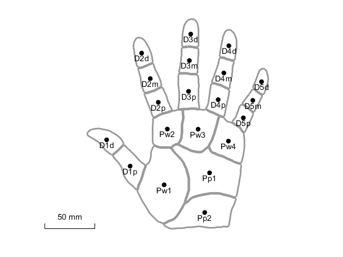
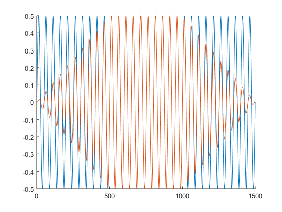
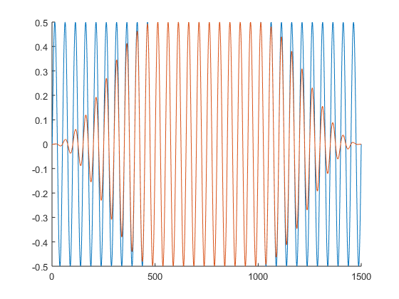

TouchSim helper functions
Contents
plot_hand
[orig,theta,pxl_per_mm,regionprop] = plot_hand(varargin): Plots hand model, returns parameters of hand coordinate system
Inputs and Outputs
- varargin: Plotting paramenters. If the first argument is an axis handle, output will be plotted in there; if instead NaN is supplied, no plot will be generated, but all output parameters will be returned; if neither, then a new figure will be generated. Other arguments: Set 'names' to true to show subpart names (default: false); set 'axes' to true to make axes visible (default: false); set 'centers' to true to plot a point on subparts centers (default: false); set 'afferents' with an afferent population to add colored dots at afferent locations; set 'color' to Nx3 matrix to override afferent default colors; set 'region' to a string (ex: 'D2d') to only plot part of hand; set 'scalebar' to true to make scalebar visible (default: true).
- orig: Origin of the hand reference frame in pixels.
- theta: Rotation angle from pixel coordinates to hand coordinates.
- pxl_per_mm: Scaling constant to convert from pixels to mm.
- regionprop: Properties of the different hand subparts
Examples
%plot hand model with region names and centers plot_hand('names',true,'centers',true);
locate
region = locate(locs): Determines hand region for each afferent or pin location.
Inputs and Outputs
- locs: Can be of type Afferent, AfferentPopulation, or Stimulus; alternatively Nx2 array of afferent/pin locations.
- region: Nested cell array of size N(1x3) containing region tags for each location. Returns empty array for each location outside the hand.
Examples
% extract region for single Afferent a = Afferent('SA1','location',[5 0]); region = locate(a); region{:}
ans =
1×3 cell array
'D2' 'd' 't'
hand2pixel
pixel_locs = locate(hand_locs): Transforms from hand coordinates (with the D2 tip as center and units in mm) to pixel coordinates (as displayed by the plot_hand() function).
Inputs and Outputs
- hand_locs: Nx2 array of locations on the hand (in hand coordinates).
- pixel_locs: Nx2 array of same locations in pixel space.
pixel2hand
hand_locs = locate(pixel_locs): Transforms from pixel coordinates (as displayed by the plot_hand() function) to hand coordinates (with the D2 tip as center and units in mm).
Inputs and Outputs
- pixel_locs: Nx2 array of same locations in pixel space.
- hand_locs: Nx2 array of locations on the hand (in hand coordinates).
apply_ramp
trace = apply_ramp(trace,len,samp_freq): Applies a linear up/down ramp to the beginning and end of a stimulus trace.
Inputs
- trace: Vector representing stimulus trace
- len: Length of ramp in s (if samp_freq set), otherwise length in bins
- samp_freq: Sampling frequency of trace in Hz, changes interpretation of len if omitted.
Examples
trace = .5*sin(linspace(0,0.3,1500)*2*pi*100);
trace_with_ramp = apply_ramp(trace,0.1,5000);
figure
hold on
plot(trace)
plot(trace_with_ramp)
 apply_sine_ramp
trace = apply_sine_ramp(trace,len,samp_freq): Applies a sinusoidal up/down ramp to the beginning and end of a stimulus trace.
Inputs
- trace: Vector representing stimulus trace
- len: Length of ramp in s (if samp_freq set), otherwise length in bins
- samp_freq: Sampling frequency of trace in Hz, changes interpretation of len if omitted.
Examples
trace = .5*sin(linspace(0,0.3,1500)*2*pi*100);
trace_with_ramp = apply_sine_ramp(trace,0.1,5000);
figure
hold on
plot(trace)
plot(trace_with_ramp)
